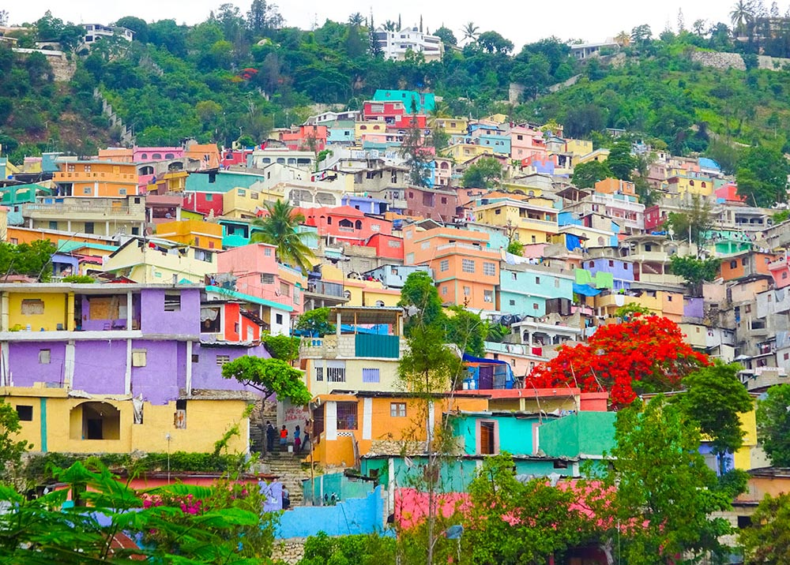
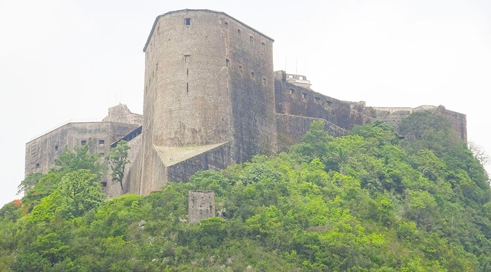

Ten Days in Haiti
"From Britain? For tourism?" enquired the puzzled immigration officer as he stamped my passport on my way home from Port-au-Prince airport. "Enjoy it?"
"Very much."
"Then tell your friends about us. Tell them we're open for tourism - and we're open for business," he added cheerily.
So here goes.
If you ever think of Haiti, the second biggest country in the Caribbean, I guess news reports of extreme poverty, AIDS, earthquakes, cholera, Papa Doc and maybe voodoo would top the list. Not empty Caribbean white-sand beaches baked in year-round sun, rhum sours and lobster dripping with Creole sauce, five star hotels and modern transport that requires virtually no advanced booking, or deserted first rate heritage sights.
There is no doubt that Haiti is punishingly deprived. By almost every measure, it is one of the poorest handful of countries on earth, with the average wage just US$2 a week. This makes negotiating basic fees an unusual experience. For example, whenever I asked any taxi driver the price of a 10 minute ride he would usually demand as much as $150, assuming that is what I pay back home. By holding my ground I could get this down to about $30, but that still keeps the prices high enough to deter Lonely Planet back-packers.
There is certainly a lack of tourist infrastructure. There are currently no up-to-date guides available in British bookshops; the only one is the Bradt from 2012. Tourists are not discouraged; they are just not expected. For instance, signage in the National Museum is not translated into English, though it is widely spoken along with French and a Creole dialect. It is very hard to find a city map anywhere, and when I did get one it was dated 2006, probably the last time they were printed. But it really isn't difficult to overcome these barriers: travelling independently turns out to be quite stress-free. And while a well-established tourist infrastructure can of course give easy access to the local fun, it can also be a barrier to getting to know the place properly. Just try escaping your hotel compound in neighbouring Dominican Republic.
There are several high end hotels in the upscale suburb of Petionville, but in the heart of the capital, Port-au-Prince, you have a choice of two outstanding places. The newest Marriott in the global chain has all the five star facilities you would expect (except city maps). It also has a cool weekend clubbing vibe on the terrace, driven by richer locals and expats in from the States.
The Oloffson is one of those nineteenth century mansions with faded glamour that usually you only read about in books. It has a starring role in Graham Greene's masterpiece The Comedians. In its 70s heyday it hosted the likes of Mick Jagger and Jackie Onassis. Since the 90s the owner's folk band has played weekly to a crowd of elites who also come for the very best food in town.
Port-au-Prince is home to 4 million people, 40% of the country, and it can be seen in panoramic view from the beautiful restaurants at the top of the hill behind Petionville. Creole culture is all around and as long as you avoid the easily-avoided three or four neighbourhoods that the Foreign Office Travel Advice list as suffering from high levels of standard criminal activity, then you should be perfectly safe.
Savaged by the tyrants Papa Doc and son Baby Doc who ruled from 1957 to 1986, then ravaged by the 2010 earthquake that killed somewhere between 100,000 and 300,000 people, most of the few foreigners here now are North American missionaries running orphanages and make-shift hospitals. Five years on, many of the ancient and fragile buildings are still rubble, including the prestigious National Palace. But there is colourful life thriving on the vibrant streets of this most African of Caribbean cities.
There is an etiquette to piloting through the over-crowded Marché de Fer or Iron Market on Rue Jean-Jacques Dessalines, the main drag bordered by earthquake-damaged buildings on both sides. This is where you will find all the usual produce as well as your authentic voodoo paraphernalia: scary spirit statues along with the legendary dolls for shaping into your enemies and stabbing with pins. A couple of friendly hawkers will meet you at the gate, help you park your car or taxi and get someone to watch over it while you are inside, then protect you as much as they can from the scrum your presence will inevitably initiate, all on the understanding that you will buy a little something from their stall on your way out.
Just down the street live and work the Resistance Artists. This is a must-see gallery-cum-junkyard, where André Eugéne runs a collective of sculptors working on social themes with a voodoo influence. He has exhibited around the world, created the Freedom monument at the International Slavery Museum in Liverpool, and will walk you through his work from recycled scrap metal before you buy a very unique piece that will be the talk of your dinner parties.
Be careful if you are taking your voodoo or art home via the tiny airport of La Isabela in Santo Domingo. This must have the most bigoted immigration officer going, quite willing to vandalise, throw away or impound your possessions if she just doesn't like the look of them. And the British Embassy in Santo Domingo, which serves both Dominican Republic and Haiti, will be of no use, simply dismissing your dispute as a private matter. Much better to send things home directly by DHL.
While locals mostly travel longer distances on buses brightly painted with paeans to Jesus or Cristiano Ronaldo, it is very easy to hire a car in Port-au-Prince for about $80 a day. Avis is the principal provider and there is a branch in Petionville as well as at the main airport. However, with no street maps and very few road signs, it is advisable to also hire a young guide to sit in the back to get you across town until you reach the main road to wherever you are going. Although they hang about right where the cars are collected, it is best to get someone you have had some dealings with to recommend one; they cost just a few dollars and they are quite safe.
There are good beaches about 45 minutes north of Port-au-Prince, but I headed across the mountains on the two hour drive south to the Caribbean coastal town of Jacmel. The small nineteenth century centre is a designated UNESCO World Heritage Site and the perfect base to explore the area.
Without doubt, the place to stay is the landmark Hotel Florita, a kind of smaller sibling of the Oloffson, with a roomy bar full of character and characters.
If you ask here, it won't take long for someone to get you an invitation to the next voodoo ceremony. A short drive to the suburbs on my second evening led to what looked like a large house with a spacious garden on a regular residential street, which turned out to be the voodoo temple.
Voodoo is a Creolised religion with African roots. To my surprise, it is not a tiny underground sect, but mainstream. Voodooists believe in a Supreme Creator, Bondye, and worship subservient spirits, called Loa, which are allocated powers over particular aspects of life. By keeping spirit sculptures at home, and by participating in ceremonies in the temple, voodooists cultivate personal relationships with these Loa to help guide them through life's journey.le, which is dressed with enormous spirit statues.
There is a lot of drumming, chanting, and women in white dancing around enormous spirit statues. Presiding is the priest, who disappointingly is wearing nothing more exotic than a fake Ralph Lauren polo shirt. In return for $50 and a bottle of the local Barbancourt rhum, which is liberally spat into sacred flames, the mystic/charlatan was happy to take me inside to read my Tarot cards. For a further $250 I could have benefitted from something called a lucky shower as well as received voodoo dolls as gifts, but I know when a line is about to be crossed so I made my excuses and left.
Just outside the town of Jacmel is the Bassin Bleu, a waterfall-filled pool surrounded by steep rocks and tall trees that combine to mottle the sun's rays. The 20 minute walk up the hill is well worth it for a quick dip.
The other main attraction is the Cayes Jacmel, the stretch of coast that runs for 20 miles east from Jacmel. There are tiny hotels in the small coves dotted all the way along; the main beach, Ti-Mouillage, is about half an hour drive from the town. None of this is developed in a way that would be recognisable to anyone used to more conventional Caribbean resorts, but the white sand and blue sea is straight out of the catalogue
There is only one road back to Port-au-Prince from Jacmel and on my return journey it was blocked by a jack-knifed lorry. Rumour said it had been stuck there since about 9 o'clock the previous night. So I just waiting along with hundreds of motorbikes, cars and trucks whose drivers and passengers collaborated together noisily to cut down shrubs, plants and even trees over many hours to clear a rival path around the obstruction.
Back in Port-au-Prince, I decided to head to the north coast of Haiti, this time by plane. Sunrise Airways is the main local carrier. It was very easy to book, and felt very safe in the 20-seat cabin, with great views across the mountains before landing 20 minutes later at the small Hugo Chavez Airport in Haiti's second city.
Cap-Haitien has huge untapped potential. There is a port, though there are few ships as Haiti has virtually no international trade. It feels like a big city: the roads are congested with slow-moving vehicles, the streets are littered with rubbish and the paths are jammed with hawkers.
The serene Habitation Jouissant is a welcome refuge from this chaos, with air-conditioning, hot showers, a wide choice of fresh juices and omelettes for breakfast, and great views across the bay.
Nearby is the historic town of Milot, Haiti's first capital just after independence from France as far back as 1804. The Haitian Revolution is the only slave revolt to lead to the founding of a state. I took a taxi along the 12 mile gravel road to the old king's enormous Sanc-Souci Palace, damaged by the 1842 earthquake but still a breath-taking sight.
It is five miles further, up a very steep ascent, to the Citadelle Lafarriére, a fortress surrounded by canons facing over the valley. My taxi wouldn't make the climb, so I switched to ride pillion on a flimsy motorbike, before having to make the last mile or so on horseback. This is a world class heritage sight that almost nobody has ever heard of and you will be there more or less alone. How you wish you had been one of the first at Machu Picchu or Angkor Wat before the hoards descended.
Just west of Cap-Haitien there is a row of beaches. The one at Cormier has a small low-key resort with loungers, masseurs, bars and restaurants that anyone can access for an entrance fee of $5 a day.
The one a little further down the road at Labadee is owned by Royal Caribbean International, and used primarily by foreigners disgorged for the day from cruise ships. Guarded by a private security force, these people are protected from Haiti as if it were a disease. These ships have thousands of berths; yet my guide told me that when they dock he may see just a handful of curious customers make the short journey to see the wonders an hour away at Milot.
What a wasted opportunity. There is so much to see and do in Haiti. It's definitely not for everyone. But for experienced independent travellers, with a decent disposable income, a little caution and a lot of get-up-and-go, it can all be accessed fairly easily and very safely. You don't need to pre-book a fully guided tour, though if you want one or need some tips from a knowledgeable local English speaker I would recommend Jacqualine Labrom who can be reached on voyageslumierehaiti@gmail.com or 011-509-3607-1321. On each leg of your journey you will meet the people who will help you along, eager to advise you where to go and what to do. I didn't take any risks. I never had any digestion trouble and always felt totally safe. In fact, I enjoyed it so much I want to tell my friends all about it.